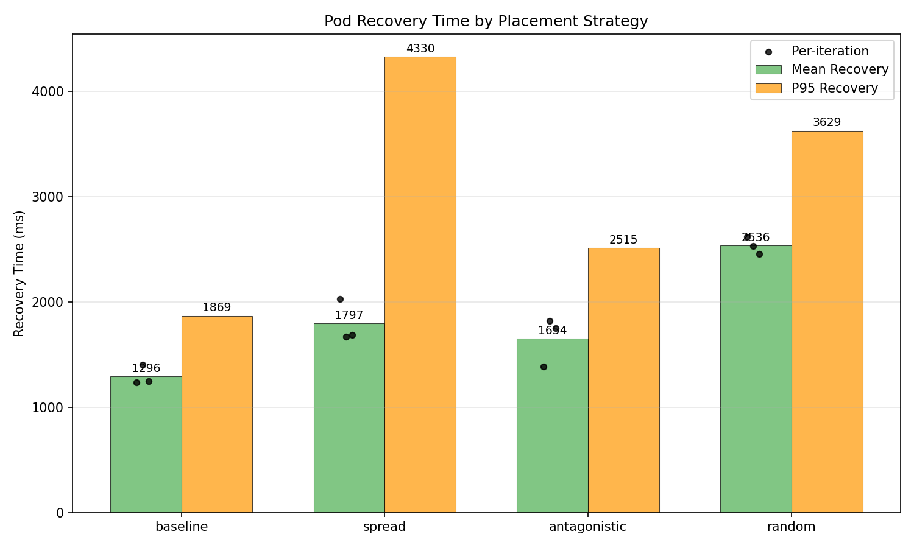
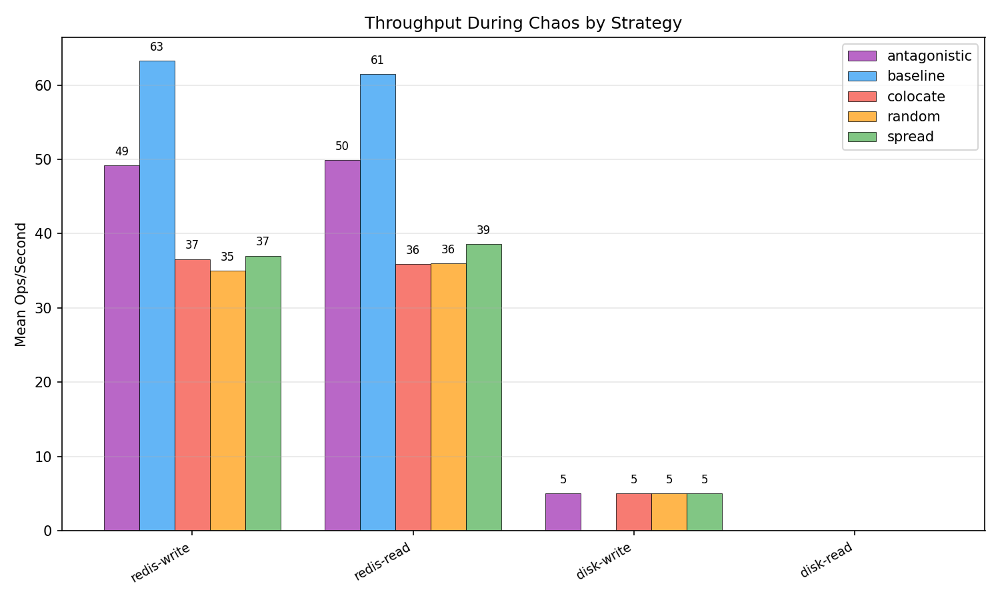
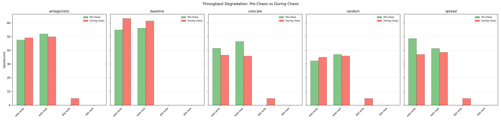
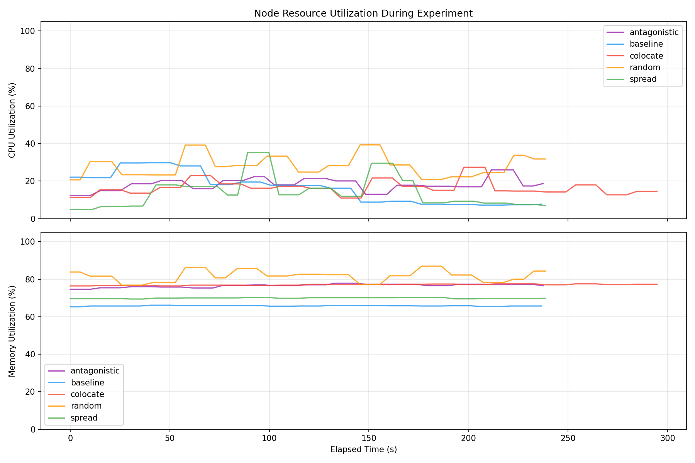
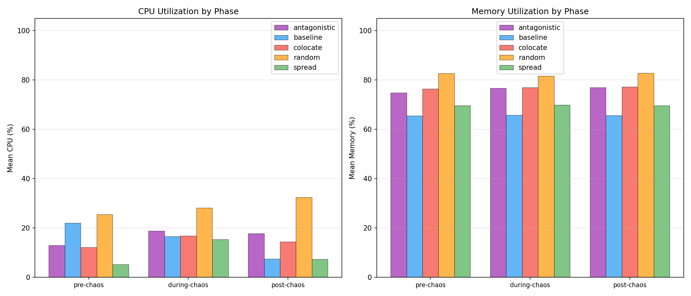
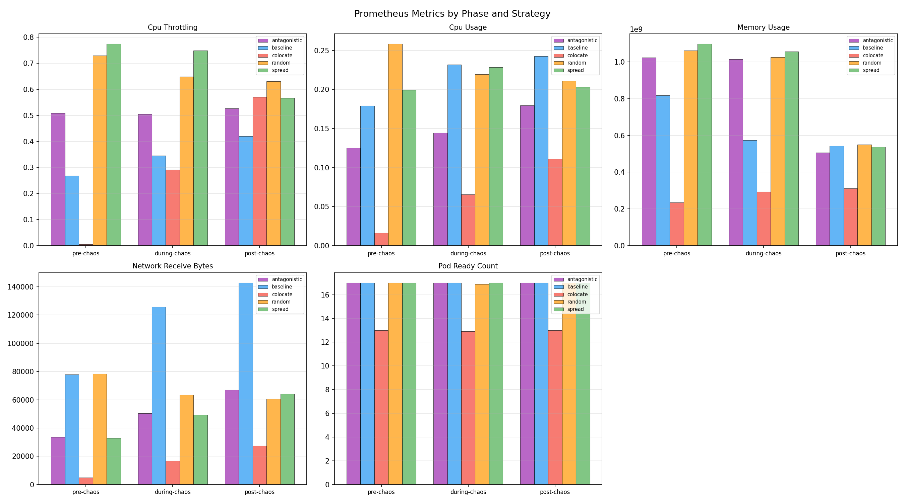

| Strategy | Runs | Avg Resilience Score | Pass Rate | Mean Recovery (ms) | Median Recovery (ms) | P95 Recovery (ms) |
|---|---|---|---|---|---|---|
| antagonistic | 3 | 0.0 | 0% | 1653.8 | 1751.9 | 2515.0 |
| baseline | 3 | 0.0 | 0% | 1295.5 | 1247.3 | 1869.0 |
| colocate | 3 | 0.0 | 0% | n/a | n/a | n/a |
| random | 3 | 0.0 | 0% | 2536.5 | 2533.4 | 3629.0 |
| spread | 3 | 0.0 | 0% | 1796.6 | 1689.9 | 4330.0 |
| Strategy | Route | Pre-Chaos Mean (ms) | During Chaos Mean (ms) | During Chaos P95 (ms) | Post-Chaos Mean (ms) | Errors During Chaos |
|---|
| Strategy | Operation | Pre-Chaos Ops/s | During Chaos Ops/s | During Chaos Latency (ms) | During Chaos Bandwidth | Post-Chaos Ops/s |
|---|---|---|---|---|---|---|
| antagonistic | redis-read | 52.0 | 49.9 | 20.13 | n/a | n/a |
| antagonistic | redis-write | 47.6 | 49.2 | 20.39 | n/a | n/a |
| antagonistic | disk-read | n/a | n/a | n/a | n/a | n/a |
| antagonistic | disk-write | n/a | 5.0 | 200.00 | 2.5 MB/s | n/a |
| baseline | redis-read | 56.2 | 61.5 | 16.39 | n/a | 66.4 |
| baseline | redis-write | 54.9 | 63.3 | 15.93 | n/a | 73.9 |
| baseline | disk-read | n/a | n/a | n/a | n/a | n/a |
| baseline | disk-write | n/a | n/a | n/a | n/a | n/a |
| colocate | redis-read | 46.5 | 35.9 | 28.06 | n/a | n/a |
| colocate | redis-write | 41.5 | 36.6 | 27.65 | n/a | n/a |
| colocate | disk-read | n/a | n/a | n/a | n/a | n/a |
| colocate | disk-write | n/a | 5.0 | 200.00 | 2.5 MB/s | n/a |
| random | redis-read | 37.0 | 36.0 | 27.81 | n/a | n/a |
| random | redis-write | 32.4 | 35.0 | 28.73 | n/a | n/a |
| random | disk-read | n/a | n/a | n/a | n/a | n/a |
| random | disk-write | n/a | 5.0 | 200.00 | 2.5 MB/s | n/a |
| spread | redis-read | 41.4 | 38.6 | 26.26 | n/a | 39.9 |
| spread | redis-write | 48.6 | 37.0 | 27.44 | n/a | 39.3 |
| spread | disk-read | n/a | n/a | n/a | n/a | n/a |
| spread | disk-write | n/a | 5.0 | 200.00 | 2.5 MB/s | 5.0 |
| Strategy | Phase | Mean CPU (%) | Mean Memory (%) | Samples |
|---|---|---|---|---|
| antagonistic | pre-chaos | 13.0 | 74.8 | 4 |
| antagonistic | during-chaos | 18.8 | 76.7 | 40 |
| antagonistic | post-chaos | 17.8 | 77.0 | 3 |
| baseline | pre-chaos | 22.0 | 65.5 | 4 |
| baseline | during-chaos | 16.6 | 65.8 | 41 |
| baseline | post-chaos | 7.5 | 65.7 | 3 |
| colocate | pre-chaos | 12.2 | 76.5 | 4 |
| colocate | during-chaos | 16.9 | 77.0 | 52 |
| colocate | post-chaos | 14.5 | 77.3 | 3 |
| random | pre-chaos | 25.5 | 82.7 | 4 |
| random | during-chaos | 28.2 | 81.6 | 40 |
| random | post-chaos | 32.5 | 82.9 | 3 |
| spread | pre-chaos | 5.2 | 69.6 | 4 |
| spread | during-chaos | 15.4 | 69.9 | 40 |
| spread | post-chaos | 7.4 | 69.7 | 3 |
| Strategy | Metric | Phase | Mean | Max | Samples |
|---|---|---|---|---|---|
| antagonistic | cpu_throttling | pre-chaos | 0.5093 | 0.5157 | 2 |
| antagonistic | cpu_throttling | during-chaos | 0.5045 | 0.5290 | 20 |
| antagonistic | cpu_throttling | post-chaos | 0.5262 | 0.5262 | 1 |
| antagonistic | cpu_usage | pre-chaos | 0.1249 | 0.1256 | 2 |
| antagonistic | cpu_usage | during-chaos | 0.1446 | 0.1674 | 20 |
| antagonistic | cpu_usage | post-chaos | 0.1794 | 0.1794 | 1 |
| antagonistic | memory_usage | pre-chaos | 1023604736.0000 | 1023696896.0000 | 2 |
| antagonistic | memory_usage | during-chaos | 1014376448.0000 | 1075404800.0000 | 20 |
| antagonistic | memory_usage | post-chaos | 506818560.0000 | 506818560.0000 | 1 |
| antagonistic | network_receive_bytes | pre-chaos | 33664.3194 | 34265.4093 | 2 |
| antagonistic | network_receive_bytes | during-chaos | 50354.4334 | 64513.8106 | 20 |
| antagonistic | network_receive_bytes | post-chaos | 67032.6670 | 67032.6670 | 1 |
| antagonistic | pod_ready_count | pre-chaos | 17.0000 | 17.0000 | 2 |
| antagonistic | pod_ready_count | during-chaos | 17.0000 | 17.0000 | 20 |
| antagonistic | pod_ready_count | post-chaos | 17.0000 | 17.0000 | 1 |
| baseline | cpu_throttling | pre-chaos | 0.2684 | 0.2734 | 2 |
| baseline | cpu_throttling | during-chaos | 0.3459 | 0.4164 | 21 |
| baseline | cpu_throttling | post-chaos | 0.4202 | 0.4202 | 1 |
| baseline | cpu_usage | pre-chaos | 0.1790 | 0.1852 | 2 |
| baseline | cpu_usage | during-chaos | 0.2317 | 0.2572 | 21 |
| baseline | cpu_usage | post-chaos | 0.2426 | 0.2426 | 1 |
| baseline | memory_usage | pre-chaos | 817596416.0000 | 819191808.0000 | 2 |
| baseline | memory_usage | during-chaos | 573577118.4762 | 819191808.0000 | 21 |
| baseline | memory_usage | post-chaos | 542175232.0000 | 542175232.0000 | 1 |
| baseline | network_receive_bytes | pre-chaos | 77899.9028 | 81861.5090 | 2 |
| baseline | network_receive_bytes | during-chaos | 125871.3780 | 144056.6161 | 21 |
| baseline | network_receive_bytes | post-chaos | 142794.5386 | 142794.5386 | 1 |
| baseline | pod_ready_count | pre-chaos | 17.0000 | 17.0000 | 2 |
| baseline | pod_ready_count | during-chaos | 17.0000 | 17.0000 | 21 |
| baseline | pod_ready_count | post-chaos | 17.0000 | 17.0000 | 1 |
| colocate | cpu_throttling | pre-chaos | 0.0053 | 0.0053 | 2 |
| colocate | cpu_throttling | during-chaos | 0.2910 | 0.5347 | 26 |
| colocate | cpu_throttling | post-chaos | 0.5699 | 0.5715 | 2 |
| colocate | cpu_usage | pre-chaos | 0.0163 | 0.0164 | 2 |
| colocate | cpu_usage | during-chaos | 0.0656 | 0.1069 | 26 |
| colocate | cpu_usage | post-chaos | 0.1108 | 0.1124 | 2 |
| colocate | memory_usage | pre-chaos | 234184704.0000 | 234184704.0000 | 2 |
| colocate | memory_usage | during-chaos | 292952851.6923 | 313405440.0000 | 26 |
| colocate | memory_usage | post-chaos | 312127488.0000 | 312127488.0000 | 2 |
| colocate | network_receive_bytes | pre-chaos | 4926.5793 | 5005.5390 | 2 |
| colocate | network_receive_bytes | during-chaos | 16730.1189 | 25581.3228 | 26 |
| colocate | network_receive_bytes | post-chaos | 27458.8359 | 27940.5005 | 2 |
| colocate | pod_ready_count | pre-chaos | 13.0000 | 13.0000 | 2 |
| colocate | pod_ready_count | during-chaos | 12.9231 | 13.0000 | 26 |
| colocate | pod_ready_count | post-chaos | 13.0000 | 13.0000 | 2 |
| random | cpu_throttling | pre-chaos | 0.7296 | 0.7478 | 2 |
| random | cpu_throttling | during-chaos | 0.6484 | 0.7201 | 20 |
| random | cpu_throttling | post-chaos | 0.6306 | 0.6306 | 1 |
| random | cpu_usage | pre-chaos | 0.2583 | 0.2598 | 2 |
| random | cpu_usage | during-chaos | 0.2196 | 0.2527 | 20 |
| random | cpu_usage | post-chaos | 0.2110 | 0.2110 | 1 |
| random | memory_usage | pre-chaos | 1061523456.0000 | 1066770432.0000 | 2 |
| random | memory_usage | during-chaos | 1025411072.0000 | 1113817088.0000 | 20 |
| random | memory_usage | post-chaos | 549289984.0000 | 549289984.0000 | 1 |
| random | network_receive_bytes | pre-chaos | 78290.6070 | 78800.4956 | 2 |
| random | network_receive_bytes | during-chaos | 63566.7329 | 75592.3818 | 20 |
| random | network_receive_bytes | post-chaos | 60678.9278 | 60678.9278 | 1 |
| random | pod_ready_count | pre-chaos | 17.0000 | 17.0000 | 2 |
| random | pod_ready_count | during-chaos | 16.9000 | 17.0000 | 20 |
| random | pod_ready_count | post-chaos | 17.0000 | 17.0000 | 1 |
| spread | cpu_throttling | pre-chaos | 0.7745 | 0.7752 | 2 |
| spread | cpu_throttling | during-chaos | 0.7490 | 0.7941 | 20 |
| spread | cpu_throttling | post-chaos | 0.5662 | 0.5689 | 2 |
| spread | cpu_usage | pre-chaos | 0.1991 | 0.1992 | 2 |
| spread | cpu_usage | during-chaos | 0.2286 | 0.2594 | 20 |
| spread | cpu_usage | post-chaos | 0.2033 | 0.2041 | 2 |
| spread | memory_usage | pre-chaos | 1097934848.0000 | 1100328960.0000 | 2 |
| spread | memory_usage | during-chaos | 1056402227.2000 | 1151905792.0000 | 20 |
| spread | memory_usage | post-chaos | 537722880.0000 | 541360128.0000 | 2 |
| spread | network_receive_bytes | pre-chaos | 32918.4371 | 33963.5391 | 2 |
| spread | network_receive_bytes | during-chaos | 49334.7078 | 60978.6575 | 20 |
| spread | network_receive_bytes | post-chaos | 64150.4337 | 65976.6390 | 2 |
| spread | pod_ready_count | pre-chaos | 17.0000 | 17.0000 | 2 |
| spread | pod_ready_count | during-chaos | 17.0000 | 17.0000 | 20 |
| spread | pod_ready_count | post-chaos | 17.0000 | 17.0000 | 2 |





